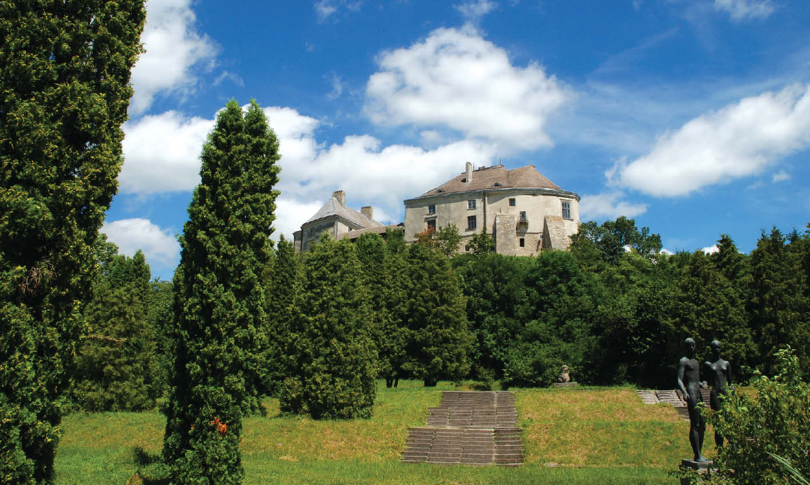

Олеський замок
Уперше згаданий в історичних джерелах 1327 року: замок перейшов у володіння князя Юрія — сина мазовецького князя Тройдена і руської княжни Марії (дочки Юрія І), запрошеного боярами на галицько-волинський королівський (князівський) престол після згасання роду Романовичів. Дата дозволяє припустити, як одну із версій, що замок побудований одним із синів галицько-волинського князя Юрія Львовича — Андрієм або Левом.
Той період історії — ХІІІ ст. — позначений грізними подіями: Київська Русь розпалась на окремі удільні князівства і, знесилена внутрішніми чварами, втратила свою могутність та стала здобиччю зовнішніх ворогів. У 1223 р. військо Чингізхана розгромило дружини руських князів та їхніх союзників на річці Калці. Спалюючи городища, руйнуючи поселення, монголо-татарські орди докотились до західних рубежів Київської Русі. У 1241 році загони Батия знищили давньоруське місто Пліснеськ, яке розташоване за 10 кілометрів від Олеська. Замок постав у час тяжких випробувань для всіх руських земель: їх поневолювали монголо-татари, на них зазіхали також угорські, польські й литовські феодали. У середині XIV ст. під владою феодальної Литви опинилися чернігово-сіверські землі, Київщина, частково Поділля та Волинь. Польща захопила Галичину й Західну Волинь; Буковина відійшла до складу Молдавського князівства, Закарпаття відвоювали угорські феодали.
Олеський замок стояв на межі Волині й Галичини, опинився на кордоні Литви й Польщі, за нього точилася постійна боротьба між цими державами. З 1340 року замком володів литовський князь Любарт. У 1366 році його відвоював польський король Казимир ІІІ. Коли на трон зійшов його племінник Людовік I — король польський і угорський, замок перейшов до Владислава, князя Опольського. Останній, проводячи політику загарбання й окатоличення галицьких земель і добиваючись від Риму права на створення окремої Галицької митрополії РКЦ, передав у 1375 році Олеську фортецю разом із Рогатином і Тустанню галицькому латинському єпископу. Це викликало протест руського населення — і замок захоплено ненадовго повстанцями. У 1377 році король розмістив тут угорські війська, які через 5 років, зразу після смерті Людовика І, за викуп залишили замок Любарту.
Для зміцнення свого становища на руських землях Королівство Польське й Велике князівство Литовське в 1385 році уклали договір — так звану Кревську унію — об'єдналися в одну державу. Великий князь литовський Ягайло одружився з польською королевою Ядвігою, став королем об'єднаної держави; його намісником на руських землях залишився брат короля — великий князь Свидригайло. Згодом між братами почалися суперечки: руські бояри, які вороже ставилися до феодально-католицького засилля Корони, підтримали Свидригайла.
Олеська фортеця залишалася півстоліття неприступною для польських магнатів. У 1431 році, коли Ягайло тримав в облозі Луцьк, князь Казимир Мазовецький рушив на Олесько. Але фортеця не піддалась: оборону її очолив Івашко Преслужич з Рогатина. До селянських загонів приєдналися і місцеві бояри.
Після укладення перемир'я між Ягайлом та Свидригайлом (2 вересня 1431 р.) замки в таких містах, як Кам'янець-Подільський, Смотрич, Скала-Подільська, Ратне, Ветли, Городно, Лопатин, перейшли в руки поляків, а Олеський лишився ові. Король пробачив олеським боярам їхній виступ, 18 жовтня того року видав їм документи на володіння землями. Але 26 жовтня вояки Свидригайла з Олеської фортеці порушили перемир'я, напали на один з дворів польського судді, зятя руського шляхтича Ходка Лоєвича[1] Станіслава «Осташка» Давидовського. За даними польського дослідника М. Вілямовського, двір спалили разом з челяддю. Це найчіткіший замок у Львівській області! Ми з одногрупником хочемо туди поїхати.